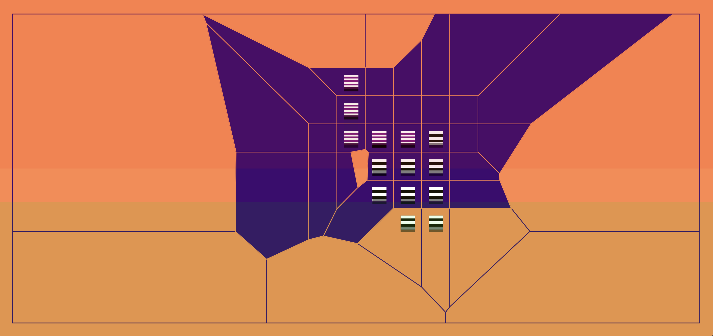

Terrain is a collection of generative artworks that helps adaptation to climate change. Using automated donations to different rewilding and reforestation organizations, each iteration of the piece initiates climate positive interventions in natural, biological environments. The supported organizations are selected via completely transparent, community based voting sessions.

The generative token consists of a series of audiovisual experiments halfway between self-modifying game boards and audiovisual interfaces. The unfolding algorithm is stuck infinitely in the process of filling its surroundings. However, infinite growth within a constrained environment that has limited resources is impossible. The music is based on the steps of this never-ending game mechanic, creating a slow, continuously changing ambient soundscape. The initial structure of the board is generated with a simple L-System rule that is combined with a tessellation algorithm. The result is an area of regular shapes and forms, encoded in the token’s metadata.

If you collect this artwork, you will support climate positive interventions: each iteration of the piece is automatically set to donate to environmental conservation funds upon minting. Terrain is transferring half of its primary sales to the following nonprofit organizations using crypto-for-charity -- Clean Water Fund, RE-volv, Ocean Alliance Inc, Sustainability Matters, Flying Cloud Institute, Pacific Rim Institute for Environmental Stewardship, Amazon Conservation Association, National Parks Conservation Association, Earth Day Network Inc, Greenwave Organization Corp, Wild Tomorrow Fund, The Life You Can Save
This project is part of RefractionDAO’s Creative Grants Season 02.
Tags: audio, game, board, abstract, climate, donation, minimal, l-system.
Minting open on fx-hash:
2023 Feb 06. 18:00 CET
.